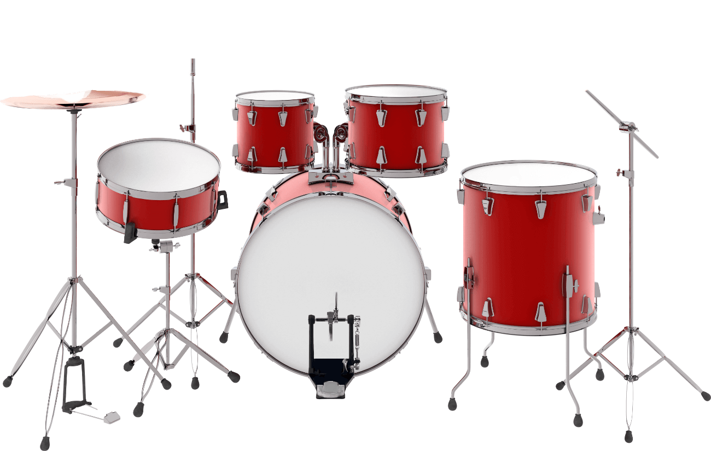

Бараба́н, розм. діал. тараба́н[1][2][3] — загальна назва для ряду ударних музичних інструментів групи мембрафонів, що складається зі шкіри (пергаменту, пластику, нейлону), натягнутої на резонатор. На барабані грають барабанними паличками або руками. Також барабан це інструмент, який був створений заради відтворення звуку биття серця.
